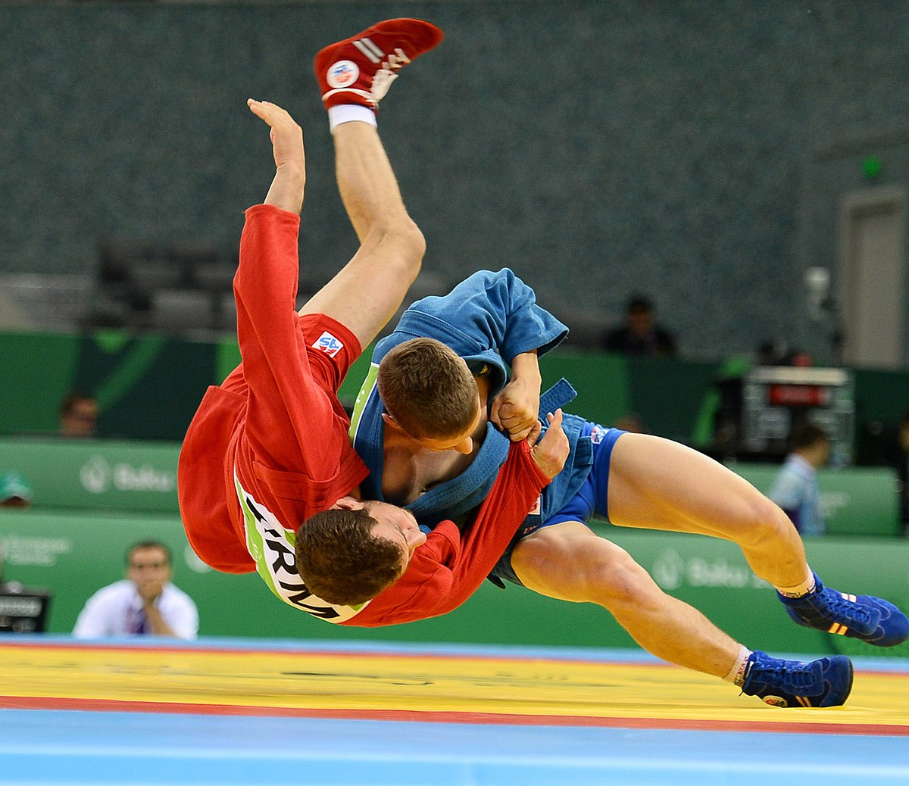
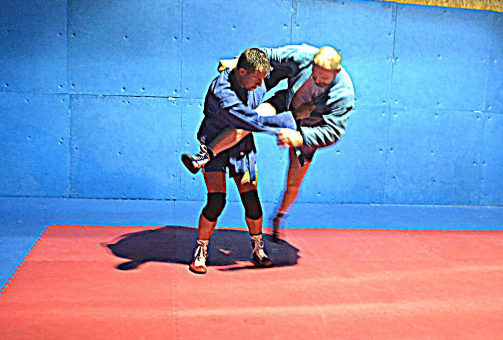

Sambo is a soviet martial art developed by Vasili Oshchepkov and Viktor Spiridinov, both researchers of martial arts during the soviet era. It was created with the intent of integrating techniques from grappling oriented martial arts such as Judo and wrestling, into traditional martial arts forms from foreign countries such as Armenian Kokh and Mongolian Khapsagay.

The term Sambo is an acronym for самозащита без оружия, which translates from Russian to “self-defense without weapons”. Though these two figures did not collaborate, their goals were united, and much of Sambo’s development came about due to the cross-training of students from both masters. A huge part of Sambo and its development was Spiridinov’s emphasis of technique, movement, and placement over physical strength – this was due to a bayonet wound that had disabled his left arm.
This martial style was used for many practical applications – police crowd control, self-defense, military training, border guards, psychiatric hospital staff, and more. The task to create a fighting style that was unique to the Soviet Union's Red Army had fallen to Kliment Yefremovich Voroshilov, one of the original five marshals of the Soviet Union, responsible for the creation of the Dynamo Sports Society (DSS).
Spiridinov was then hired as the self-defense instructor for the society, with a background in Japanese Jiu-Jitsu, Judo, Greco-Roman wrestling, and a number of folk Turkic wrestling styles – he also went on to travel to Mongolia and China to observe their native fighting styles. Here is a great demonstration of Sambo by Vadim Kolganov, bronze medallist in the 2005 World Masters Sambo Championship in Prague:
Soon after the creation of the DSS in 1923, Oshchepkov and Spiridinov were granted a team of experts to work with (though both individuals did not work together) by the Soviet government in an effort to perfect the Red Army’s fighting system. It is also possible that this effort was made in an attempt to create a martial art of Soviet origin, out of pride and nationalism, although there are no official sources to actually confirm this.
Spiridinov’s vision was to create a fighting style that could adapt to any and all situations, by merging the most effective techniques of numerous fighting styles into one – this bears a striking resemblance to the goal of Krav Maga. Spiridinov was the first to begin using the term ‘Sambo’ and also went on to develop a lesser-known variant of it known as ‘Samoz’.

Samoz was intended to be used by weaker individuals, or even people with injuries and various disabilities. This was most likely inspired by his WWI bayonet injury.
Aside from Samoz, there are two primary variants of Sambo:
Combat Sambo was specifically developed for the military and for effective use in real-life scenarios of hand-to-hand combat. Unlike Sports Sambo, it includes many techniques otherwise prohibited in almost every combat sport – soccer kicks, groin kicks, headbutts and eye gouges. It also includes the more common techniques such as knees, punches, elbows, holds and throws, some of which are also excluded in Sport Sambo.
This martial art is seldom known amongst most people, regardless of the multiple and widespread tournaments that take place every year. It is a great martial art to add to one’s grappling arsenal, due to its simple and yet effective techniques and applications. It also provides, thanks to the people who created it, extreme adaptability to those who manage to wield it effectively.